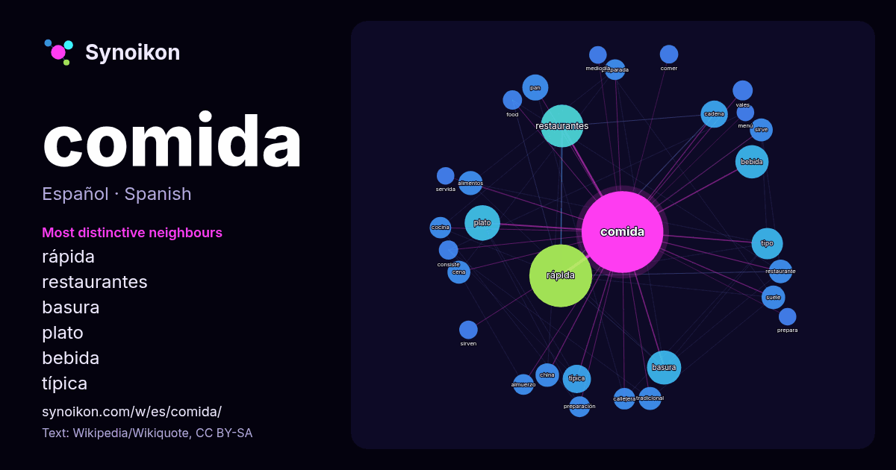

Español · palabra popular
comida
“food” · Las palabras encontradas a su alrededor en 1219 apariciones de Wikipedia, Wikiquote.

Vecinos más característicos
- rápida 110×
- restaurantes 55×
- basura 37×
- plato 36×
- bebida 33×
- típica 24×
- pan 20×
- restaurante 17×
- cena 17×
- cadena 17×
- callejera 16×
- alimentos 15×
- sirve 15×
- almuerzo 15×
- preparada 14×
- suele 14×
- cocina 14×
- vales 13×
- preparación 13×
- food 13×
× = cuántas veces más que en el texto general de Wikipedia.
Vecinos más frecuentes
- rápida 128
- restaurantes 59
- plato 41
- basura 38
- bebida 36
- tipo 32
- típica 26
- cadena 24
- pan 22
- popular 21
- alimentos 19
- china 18
- restaurante 18
- suele 18
- cena 17
- principal 17
- sirve 17
- tradicional 17
- callejera 15
- cocina 15
En contexto
- estos procedimientos se juntan se dice que se está preparando una comida. Una comida es la mezcla de uno o más alimentos sometidos a un proceso físico Wikipedia snippets · Alimento
- local que ofrecía comida detrás de una ventana de vidrio y una ranura para pagar. Una de las características más importantes de la comida rápida es la homogeneidad Wikipedia snippets · Comida rápida
- callejera está estrechamente relacionada con la comida para llevar, la comida basura, los aperitivos y la comida rápida, siendo su rasgo característico la posibilidad Wikipedia snippets · Comida callejera
- gatos no pueden sintetizar el compuesto. la comida para gatos seca tiene una durabilidad mayor que la comida húmeda. Se trata de un pienso compuesto adaptado Wikipedia snippets · Comida para gatos
- La comida basura o comida chatarra (calco del inglés junk food) contiene, por lo general, altos niveles de grasas, sal, condimentos o azúcares (que Wikipedia snippets · Comida basura
- preparados que se ofrece para que los clientes elaboren comidas caseras. Los kits de comida están siendo comercializados mediante un servicio de provisión Wikipedia snippets · Kit de comida
- La comida callejera en Turquía es muy común y refleja la rıqueza de su cocina. La venta de comida en calle es tan difundido como en quioscos, vans y Wikipedia snippets · Comida callejera (Turquía)
- tiempos de una comida (o «menú por tiempos») son los diferentes platos que se sirven en un orden específico al comensal. Las comidas se componen de uno Wikipedia snippets · Tiempo (comida)
Más palabras
- agua
- arte
- bosque
- caballo
- camino
- campana
- canción
- ciencia
- ciudad
- clima
- corazón
- desierto
- dinero
- dios
- espejo
- estrella
- familia
- fuerza
- gato
- historia
- invierno
- isla
- jardín
- lengua
- lluvia
- madre
- mapa
- miel
- montaña
- muerte
- naturaleza
- oro
- otoño
- pan
- perro
- puente
- reloj
- sal
- salud
- silencio
- sombra
- tiempo
- tormenta
- trabajo
- tren
- té
- verano
- verdad
- vida
Precalculado el 2026-10-09 con los ajustes predeterminados (±5 palabras, corpus mediano). El mapa interactivo puede actualizarlo con datos en vivo.
Interfaz traducida automáticamente; se agradecen correcciones.